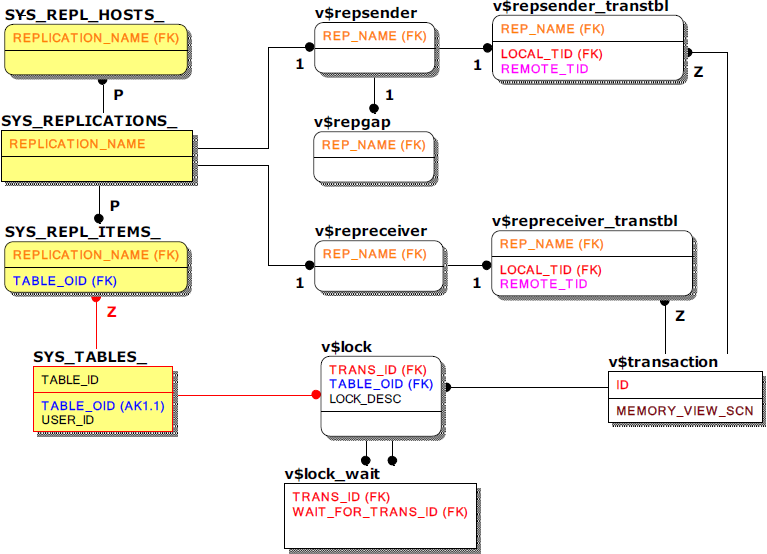

이중화 관련 주요 메타테이블 및 성능뷰
이중화 관련 모니터링을 위한 조인쿼리 시 참고할 주요 키 컬럼만 표기한 메타테이블 및 성능뷰의 관계는 아래와 같다. 참고로 SYS_REPL_ITEMS_는 데이터베이스 사용자 이름과 테이블 이름을 알기 위해 SYS_USERS_와 SYS_TABLES_을 굳이 조인하지 않아도 되게끔 컬럼 이름과 사용자 이름이 함께 저장되어 있다.
또한, 앞서 언급했듯이 세션 번호와 쿼리 번호가 없는 이중화 트랜잭션 특성상 v$repsender_transtbl, v$repreceiver_transtbl을 통하여 이중화 상대 서버에서 대응되는 트랜잭션을 식별한다.

주요 메타테이블
- SYS_REPLICATIONS_
모든 이중화 객체에 대한 정보가 저장된 메타테이블로 이중화 대상 서버가 이중화를 반영한 시점(XSN)과 같은 상세한 정보를 확인할 수 있다.
- SYS_REPL_HOSTS_
이중화 대상 서버의 정보가 저장된 메타테이블로 이중화 대상 서버의 주소(HOST_IP)와 포트 번호(PORT_NO)를 확인할 수 있다.
- SYS_REPL_ITEMS_
이중화 대상 테이블에 대한 정보가 저장된 메타테이블이다.
주요 성능뷰
- v$repsender
이중화 송신 스레드인 sender의 상태를 나타내는 성능뷰로 sender가 구동되어 있지 않으면 조회되지 않는다.
- v$repgap
최신 리두로그 일련번호와 sender가 전송한 리두로그 일련번호의 간격(gap)을 나타내는 성능뷰로 이중화 대상 서버 간 동기화 정도를 의미하므로 이중화 모니터링 시 필수적으로 활용된다. sender에 의해 측정되므로 sender가 구동되어 있지 않으면 이 역시 조회되지 않는다.
- v$repreceiver
이중화 수신 스레드인 receiver의 상태를 나타내는 성능뷰로 receiver가 구동되어 있지 않으면 조회되지 않는다.
- v$repsender_transtbl
sender가 수행 중인 이중화 트랜잭션에 대한 정보를 나타내는 성능뷰로 해당 트랜잭션과 대응되는 상대편 서버의 트랜잭션을 알 수 있다. 이 역시 sender가 구동되어 있지 않으면 조회되지 않는다. - v$repreceiver_transtbl
receiver가 수행 중인 이중화 트랜잭션에 대한 정보를 나타내는 성능뷰로 해당 트랜잭션과 대응되는 상대편 서버의 트랜잭션을 알 수 있다. 이중화 트랜잭션의 lock으로 인해 로컬 트랜잭션이 대기하는 현상이 발생할 때 주요 참고지표가 된다. 이 역시 receiver가 구동되어 있지 않으면 조회되지 않는다.
{kind=link}